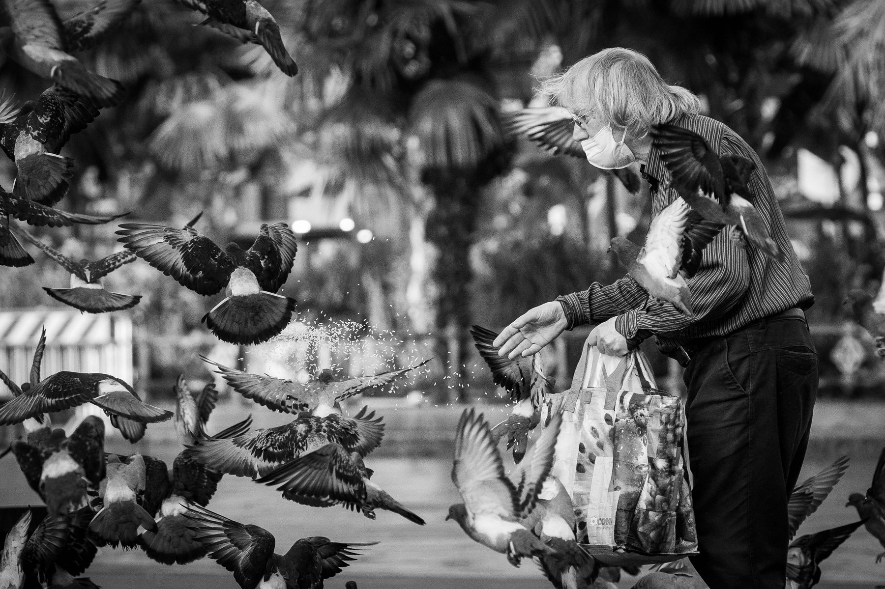
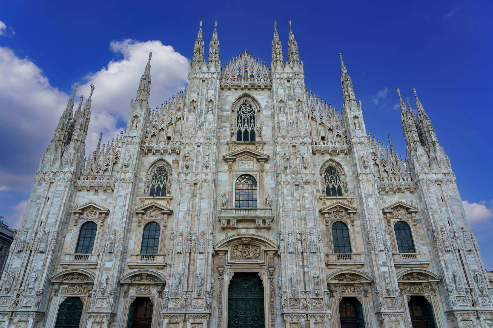
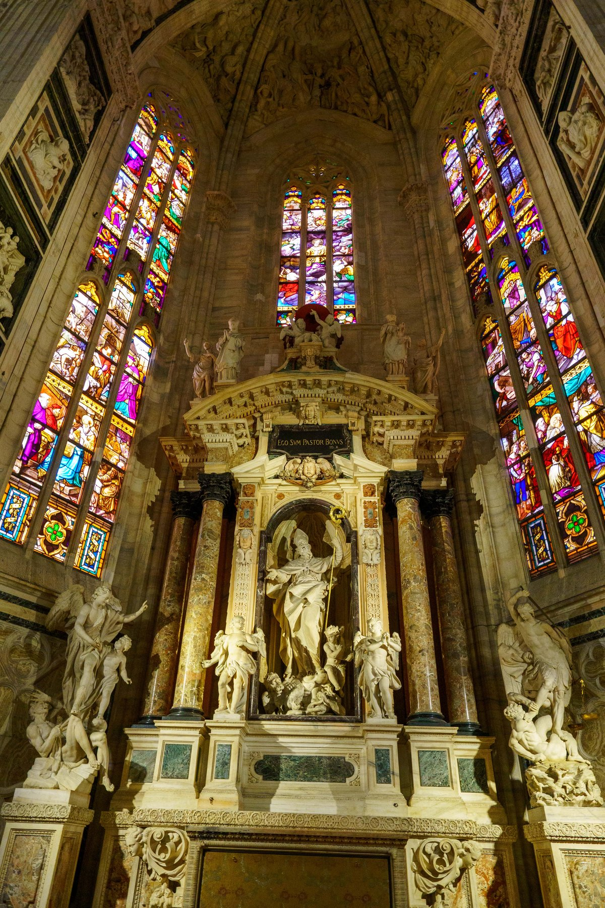
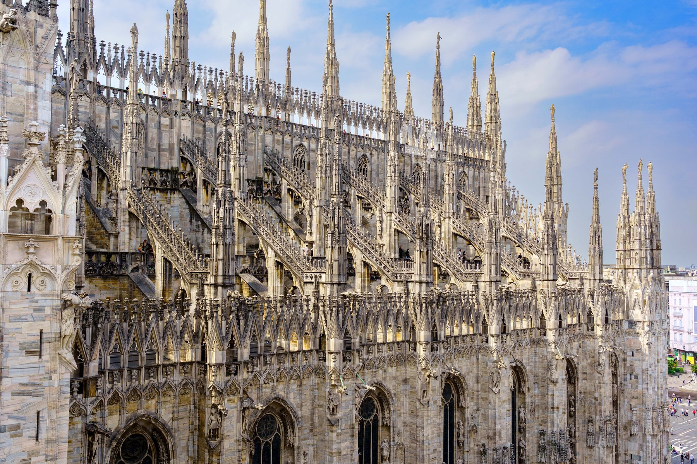
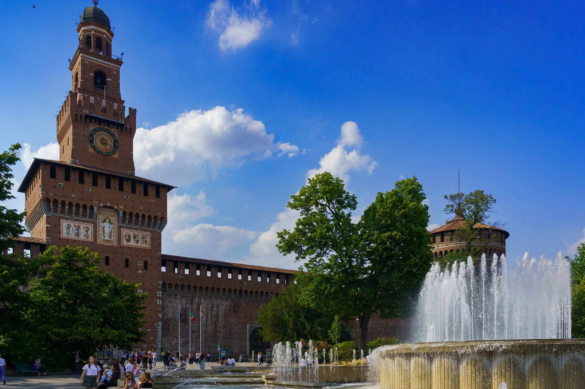
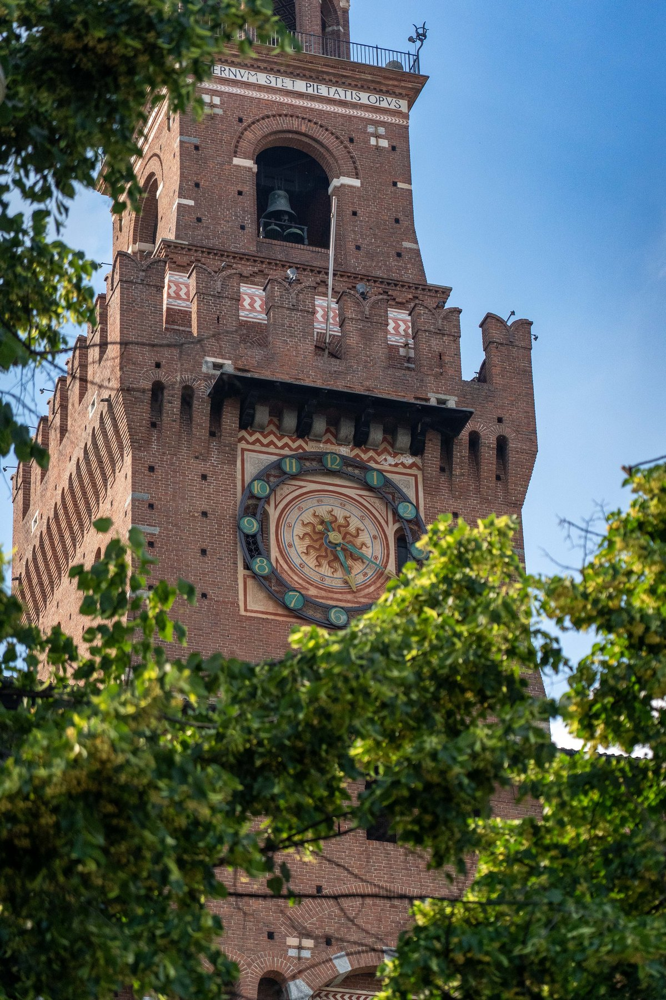
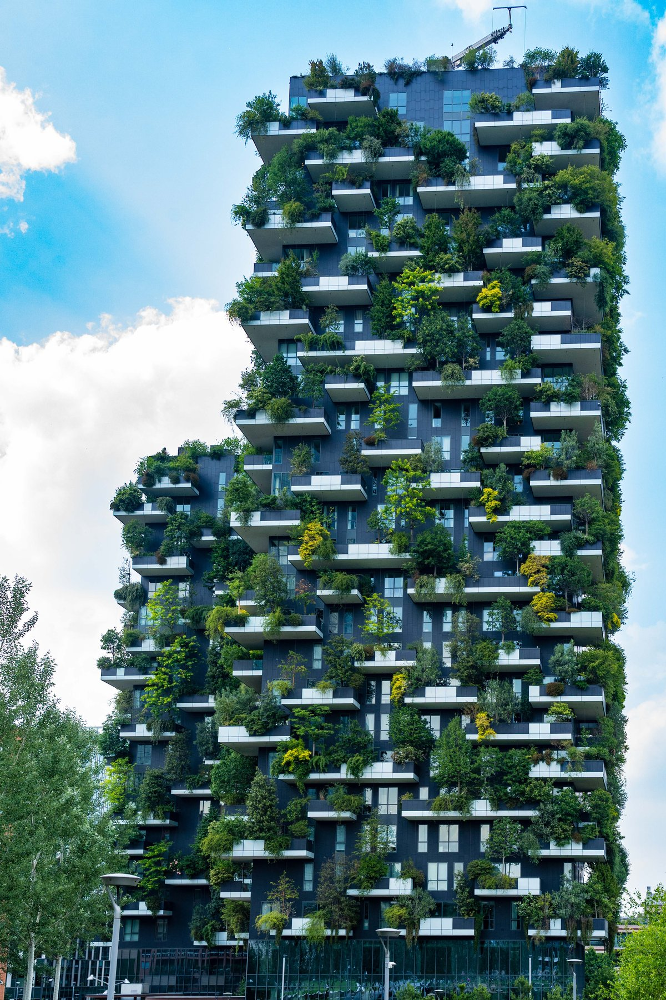
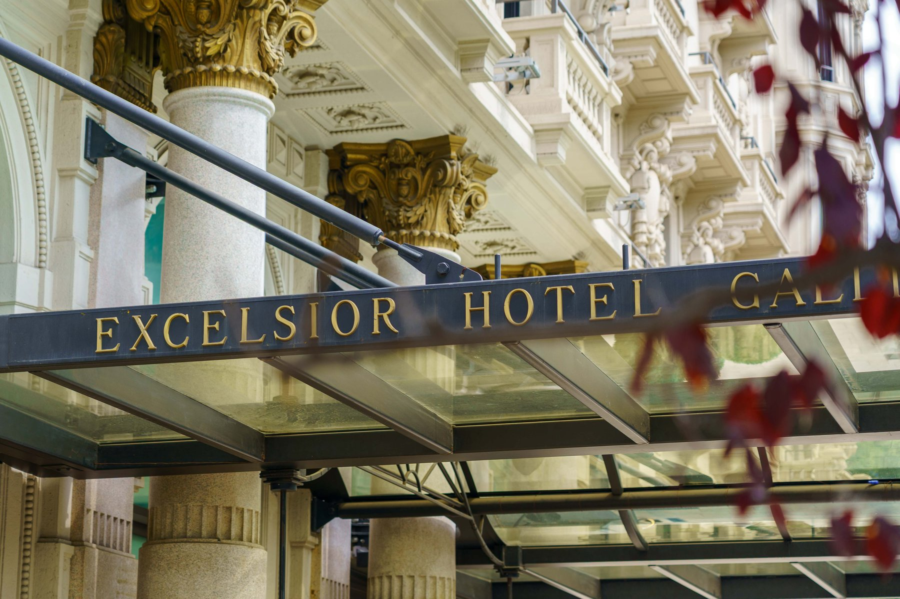
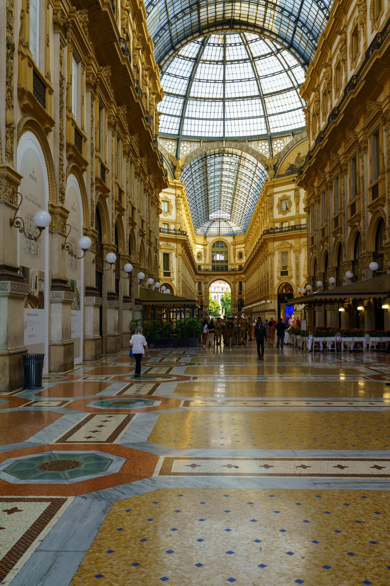
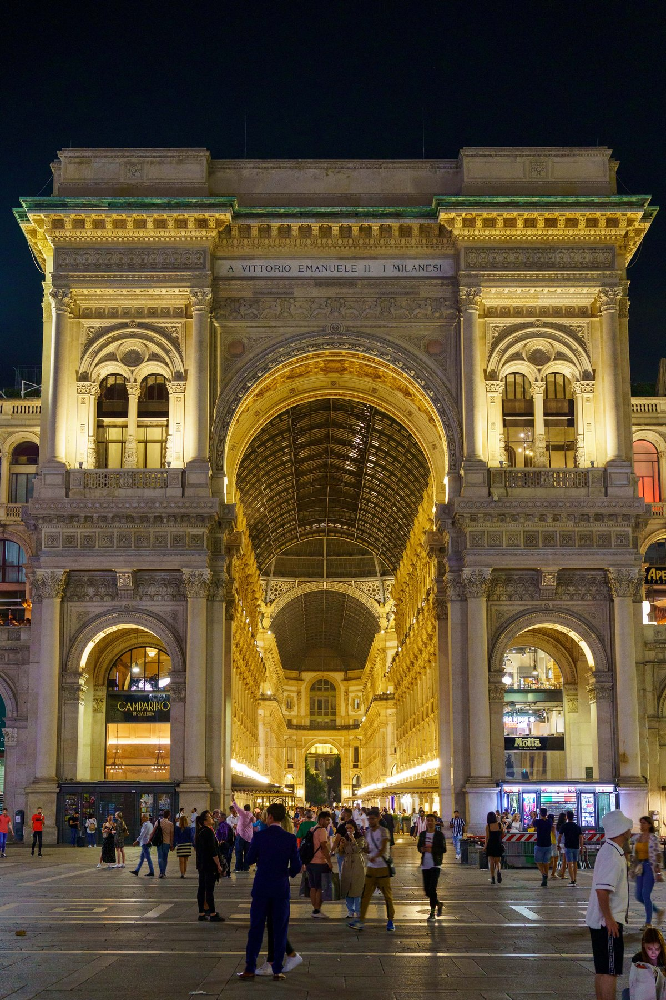

Milan
An early morning walk near the Duomo catches the city at its quietest — an old man feeding the pigeons, long before the crowds arrive. By daylight, the Duomo's marble facade is the main event: stained glass and statuary fill the interior, and a rooftop tour winds through a forest of spires, close enough to touch. Across town, Castello Sforzesco's brick walls rise behind a fountain, its Torre del Filarete keeping time on an astronomical clock face. Milan's newer side holds its own: the Bosco Verticale's balconies have gone fully wild with trees, and the Excelsior Hotel Gallia's gold lettering marks a different kind of landmark. The day closes at the Galleria Vittorio Emanuele II — a mosaic floor and glass-domed arcade by daylight, its entrance arch glowing gold after dark.









